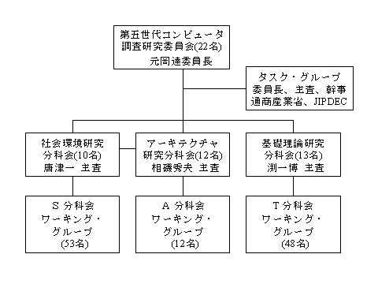

アーキテクチャ分科会では、その構想に対し、 もう少し現実的な従来型コンピュータ・アーキ テクチャの延長上にあるプロジェクトにすべき だとの意見が多かった。最終的には、通商産業 省及び基礎理論研究分科会のメンバーの本プロ ジェクトに対する熱意がアーキテクチャ分科会 にも伝わり、基礎理論研究分科会が考える方向 に意見は収斂していった。 児西 [1987] は、 「企業での研究開発プロジェクトの立案とは、 資源ネックのなかからそれをどのようにやりく りしてその企業の経営目標の達成に資する商品 の開発を行うかを決めることである。これに対 して第五世代コンピュータプロジェクトの企画 立案とは、まず何が本当に革新的であるか、何 が国家プロジェクトで行うに値する研究開発目 標かを考えることであり資源ネックというより 目標に関する知識のネックを議論によって突き 抜けようとする試みであった」とし、第五世代 コンピュータ・プロジェクトの企画立案の革新 性を指摘している。このような革新性は、委員 会の参加企業にとっては当初なかなか理解でき ないものであったのだろう。 一方、通商産業省の内部でも、多額の資金を 投入して全く方向違いのプロジェクトを行おう |
としているのではないかといった不安があった のは確かである。そこで、プロジェクトの価値 を客観的に評価する一つの方策として、1981年 10月に第１回国際会議を開催した。この会議は 資金の制約のため海外からは少数の学者しか招 聘できなかったが、国内はいうまでもなく海外 からも数多くの学者が自費で参加した。第五世 代コンピュータ・プロジェクトは、その計画の 革新性が それらの人々により 賞賛され （注 ８）、国際会議は好評に終わり、通商産業省も 本プロジェクトに本腰を入れるようになったの が実状である。 方向性は正しくても、具体的なプロジェクト となると数々の問題点が山積している。ひとつ のエピソードとして、岡松壮三郎電子政策課長 （当時）はこのプロジェクトを俗称「星雲プロ ジェクト」と名付けた。すなわち、目標が星雲 内にあるのは確かであるが、実際、星雲の中に 入ってしまうとそこには一つの宇宙が存在して おり、どこに正しい目標があるのか分からなく なってしまうという意味で名付けられたもので ある。 プロジェクトが始まった当初は、企業側の対 応も鈍かった。しかし、1983年度に予算が大幅 |
- 112 -